DIA01
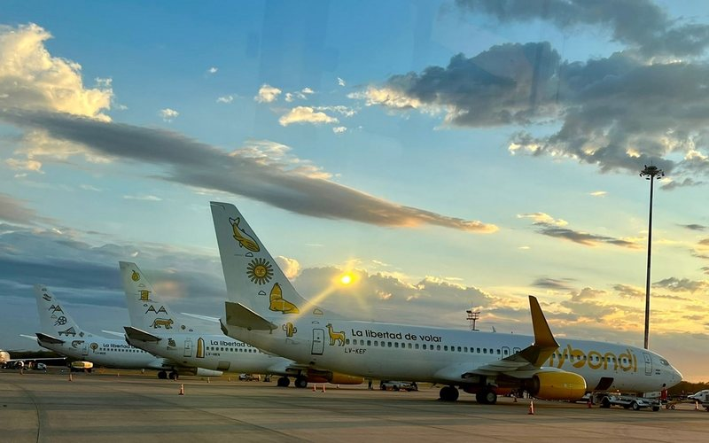
VOO / TRASLADO
Chegada em Miraflores
DIA02
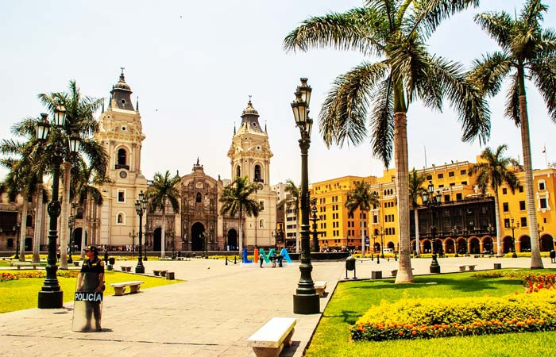
POR CONTA
Centro Histórico & Huaca Pucllana
DIA03
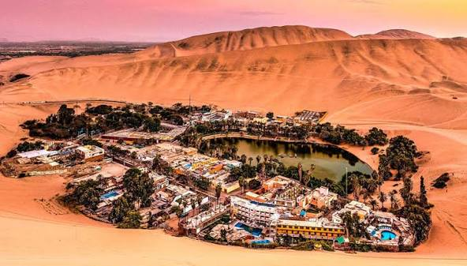
GURU EXPLORER
Paracas & Huacachina
DIA04
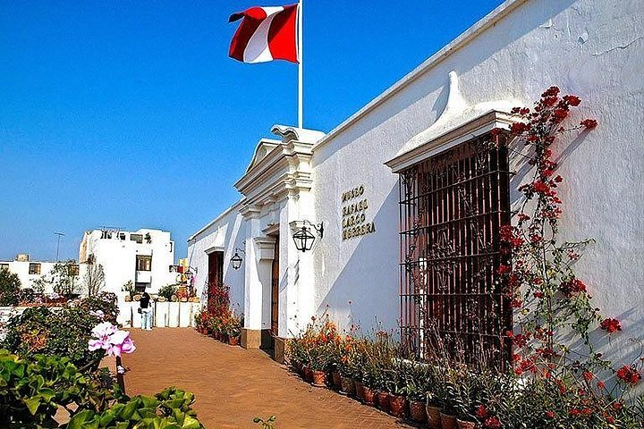
VOO / TRASLADO
Lima Museu e Barranco → Cusco (Aclimatação)
DIA05
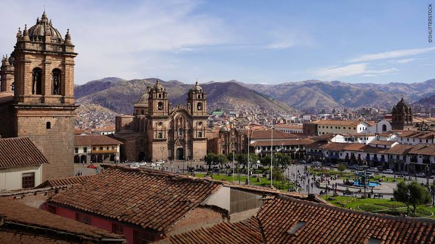
GURU EXPLORER
City Tour Arqueológico
DIA06
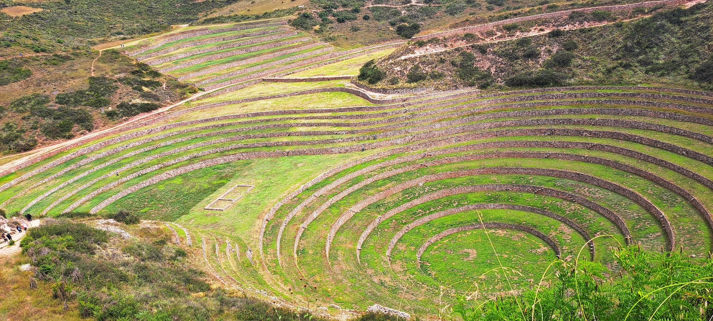
GURU EXPLORER
Vale Sagrado → Ollantaytambo
DIA07
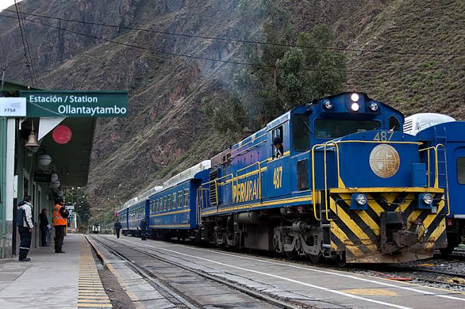
POR CONTA
Ollantaytambo → Águas Calientes
DIA08
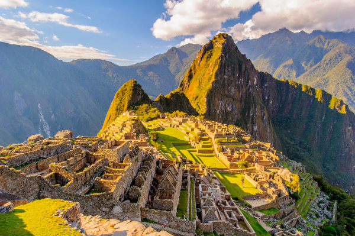
GURU EXPLORER
Machu Picchu (O Grande Dia)
DIA09
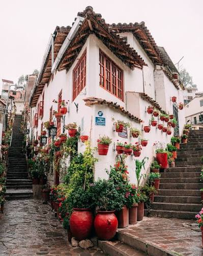
POR CONTA
Cusco Livre (Recuperação)
DIA10
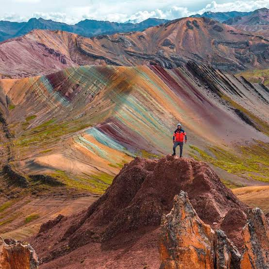
GURU EXPLORER
Montanha Colorida (Palcoyo)
DIA11
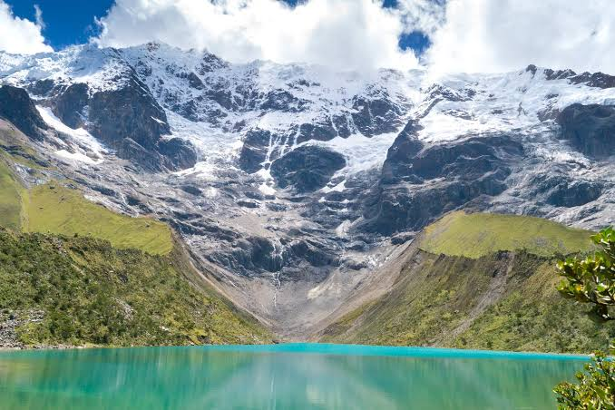
GURU EXPLORER
Lagoa Humantay
DIA12
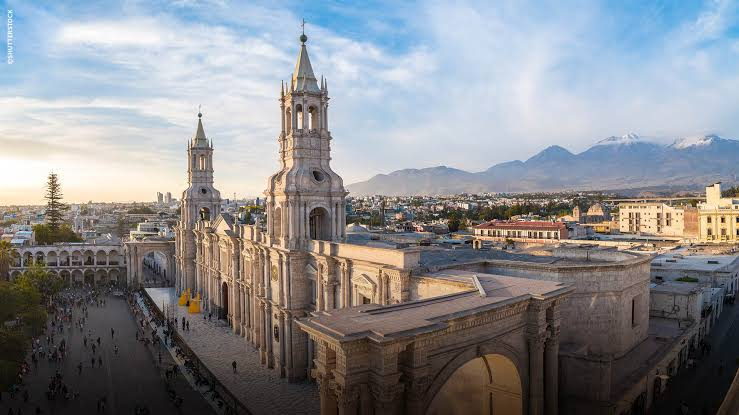
VOO / TRASLADO
Cusco → Arequipa
DIA13
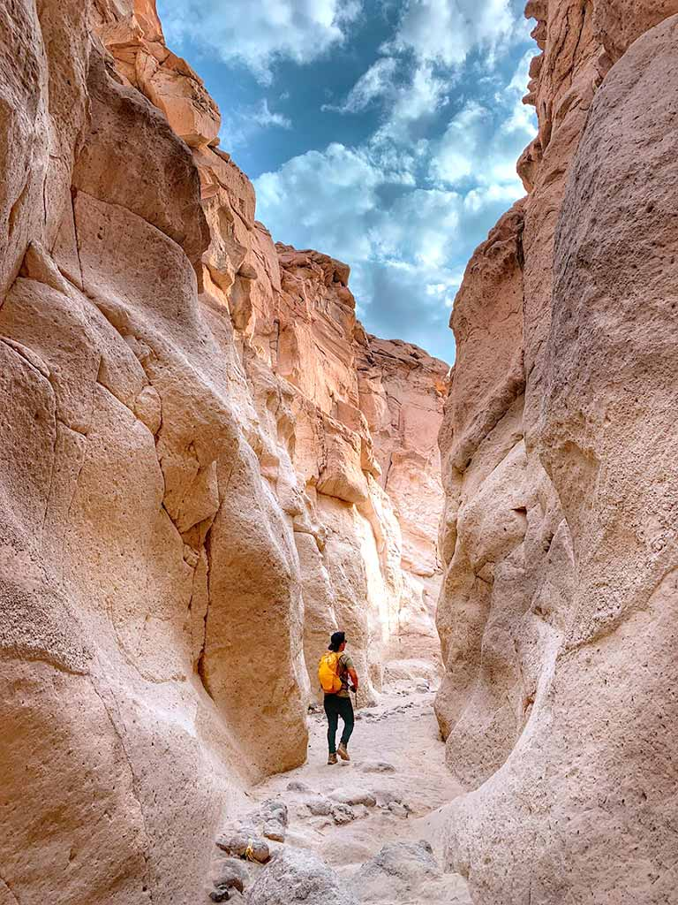
Por conta
Último dia em Arequipa
DIA14
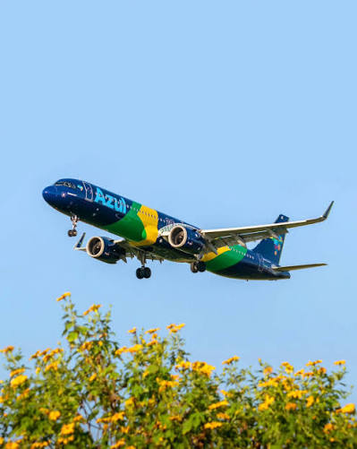
RETORNO
Retorno ao Brasil
Maido: Eleito entre os melhores do mundo. Osaka: Experiência Nikkei de elite (Japonês + Peruano).
Mérito: Top mundial, proposta diferente e criativa. Astrid y Gastón: Onde tudo começou com Gastón Acurio.
La Mar: Famosíssimo, mas costuma lotar (não aceita reserva). Barrancones: Muito bem comentado nas redes.
Huaca: Em frente ao sítio arqueológico, ceviche muito elogiado. Rosa Náutica: Clássico turístico sobre o píer.
Apenas 9 cadeiras. Comida de chef com preço de rua. Fila rápida.
Comida crioula tradicional em ambiente de taberna histórica.
A melhor fusão Chinês-Peruana (Chifa) clássica de Lima.
A especialidade absoluta aqui é o Lomo Saltado perfeito.
Foco em carnes. Curiosidade: não deixe de provar o pastel/pamonha.
Sanduíches icônicos estilo fast food de alta qualidade.
Parada obrigatória em Miraflores para os melhores churros peruanos.
Restaurante casual com sobremesas extremamente elogiadas.
Rutina: Charme em Miraflores. Maketto: Bom ceviche e clima casual. Amore: Outra ótima opção.
Muito bem avaliado, pratos modernos e visual incrível.
Ambiente rústico chique, ótimo custo-benefício e tapas famosas.
Bonito, com jardim e comida vegana surpreendente até para carnívoros.
Dentro da estação de trem. Tem um hotel lá e faz parte do conceito farm-to-table (da fazenda para a mesa)
Destaca-se pela culinária andina e pelo conceito farm-to-table também. Vi boas indicações
Local clássico para o jantar antes ou depois da subida a Machu Picchu.
O melhor da gastronomia regional em um ambiente belíssimo.
Sushi Nikkei de alta qualidade em um casarão de pedras brancas.
🎟️ Cupons de Desconto
• GetYourGuide: LARAPGARCIA5
• Airalo (E-sim): CABENAMALA
• Real Seguro Viagem: CABENAMALA
🏨 Hospedagens (Dicas das Redes)
Lima (Miraflores):
- 📍 Hotel Fausto (Recomendado)
- 📍 Naia Miraflores (Antigo Selina)
- 📍 Waikiki Hostel (Dica do TikTok)
Cusco:
- 📍 Casa Cristobal Centenario Deluxe (Boa localização, mas ⚠️ pode ser barulhento)
- 📍 Pariwana Hostel (Muita indicação desse!)
- 📍 Hotel Tariq Boutique ou Villa Betty B&B
- 📍 Hotel Ruínas ou Killaquente
Ollantaytambo:
- 📍 Hotel Tikawasi Ollanta 2 (Estratégico para o trem)
- 📍 El Albergue Hotel (Estratégico para o trem)
- 📍 Quechua's lodge (Belíssimo e diferente, mas não sei se é muito caro)
💵 Dinheiro e Câmbio
• Onde Sacar: Banco de la Nación (MultiRed). Não cobra taxa para transações de até 400 soles.
• Cartões: Astropay tem cotação melhor que Wise. Wise cobra ~R$ 20 por saque.
• App Útil: ATM Fee Saver (para checar taxas dos caixas em tempo real).
• Western Union Cusco: Loja em frente ao Palácio de Justiça (09h às 16h), perto da loja Bata. Bom para sacar valores maiores.
• ⚠️ Atenção: Leve dinheiro em espécie para as gorjetas dos Free Tours.
💊 Checklist de Saúde (Altitude/Soroche)
• Exame pré-viagem: Eletroforese de hemoglobina (recomendado antes de ir).
• Farmácia: Sorojchi Pills, Acetilcisteína e Diamox (consultar médico).
• Socorro Imediato: Água de Florida (para cheirar em caso de enjoo) e Balas de Coca.
• Regra de Ouro: Ficar 2 dias em Cusco dedicando tempo tranquilo para aclimatar antes de qualquer trilha.
📞 Agências e Contatos
• Guia em Cusco (Mario): +51 969 901 011 (Passeios privados e em grupo).
• Ajuda com Reservas (Nuny): nunypelomundo@gmail.com
• Agências Anotadas: Guru Explorers (principal), FF Travels, Arayas, Machu Picchu Peru Tours, Peru Grand Travel.
🚌 Transporte em Lima
• Airport Express: Terminal 2 → Guichê Azul. Destino Miraflores por ~20 soles.